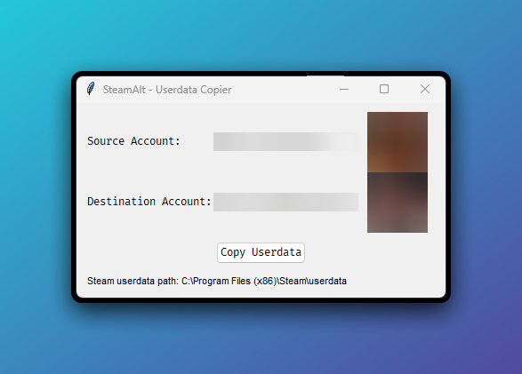

What is SteamAlt?
SteamAlt is a simple GUI tool that allows you to copy game data (saves, settings, etc.) between different Steam accounts on the same computer. This is particularly useful when:
- You have multiple Steam accounts
- You want to transfer game progress to a new account
- You need to sync settings between accounts
Features
Per-Game Selection
Pick exactly which games to copy, shown with their real names
Linux and Windows
Native builds for both, with Steam detected automatically
Avatar Preview
Visual confirmation with profile avatars to prevent mistakes
Steam Client Check
Detects a running Steam client and can close it for you before copying
Safe Copy
If a copy fails or is cancelled, the existing data in the destination is kept
Custom Steam Folder
Steam installed somewhere unusual? Set the folder once and it is remembered
How to Use
Download and Run
Download the latest release from GitHub and run the executable
Windows Download Linux DownloadSelect Accounts
Choose your source account (where data is copied from), tick the games you want, and choose the destination account (where data is copied to)
Confirm and Copy
Review the confirmation dialog and proceed. SteamAlt will handle the rest!
Note: Steam should be closed during this process. If it is running, SteamAlt offers to close it for you.
Frequently Asked Questions
Is this safe to use?
Yes, SteamAlt only copies files between Steam userdata folders and doesn't modify any Steam system files. However:
- Always back up important data before making changes
- Close Steam before copying (SteamAlt can do it for you)
- Make sure you've selected the correct accounts
What data gets copied?
SteamAlt copies the games you select, i.e. their numeric folders in the account's userdata directory, which typically contain:
- Game save files
- Configuration files
- Some game-specific data
It does not copy Steam account credentials or login information.
The tool can't find my Steam folder
If SteamAlt can't automatically detect your Steam installation, a "Steam folder" window opens by itself. You can also open it any time with the "Change" button in the footer:
- Paste the path of your Steam folder (the one that contains "userdata" and "steamapps")
- SteamAlt checks the path as you type
- Save it; the folder is remembered for next time